Load and browse opening books, and edit book moves
Screenshots show the Japanese interface unless otherwise noted.
Load an opening book and view moves for the current position
Choose Game → Game to open the game dialog and start a game. Select any game setup, such as human vs. engine.
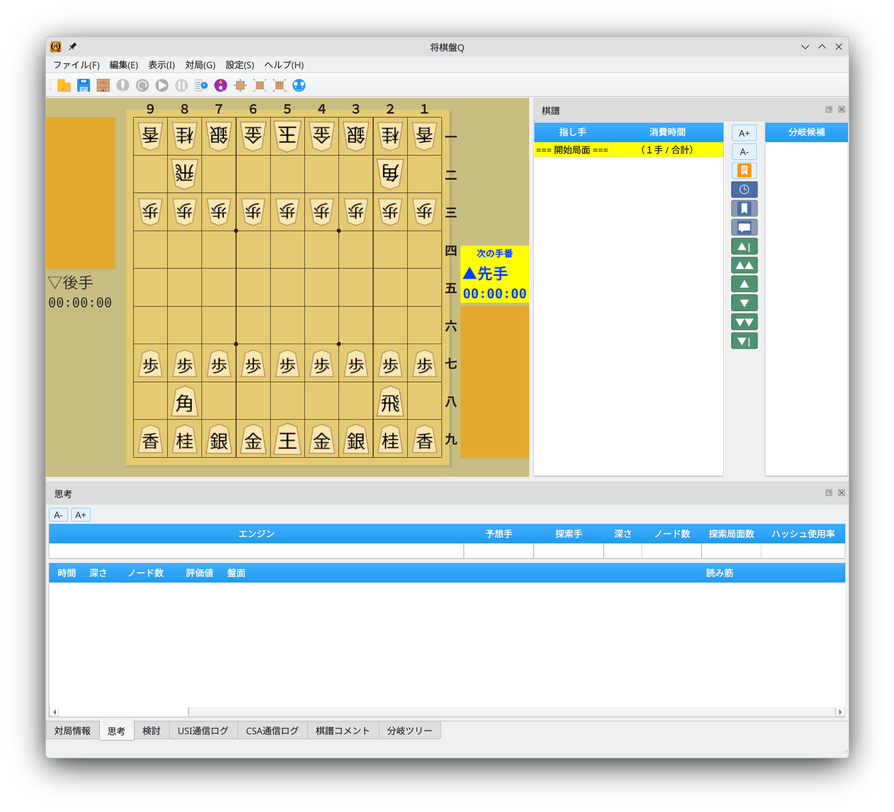
Main window: choose Game → Game
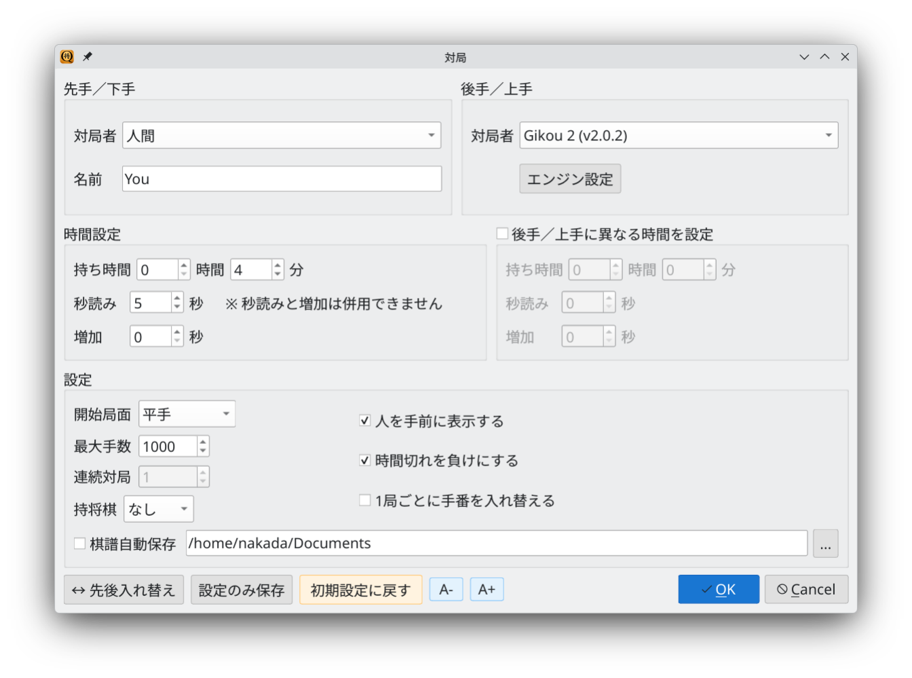
Game dialog: set players, time controls, and the starting position
Initially, no file is selected in the opening book dock. The move table has columns for number, play, book move, expected reply, edit, delete, evaluation, depth, frequency, and comment.
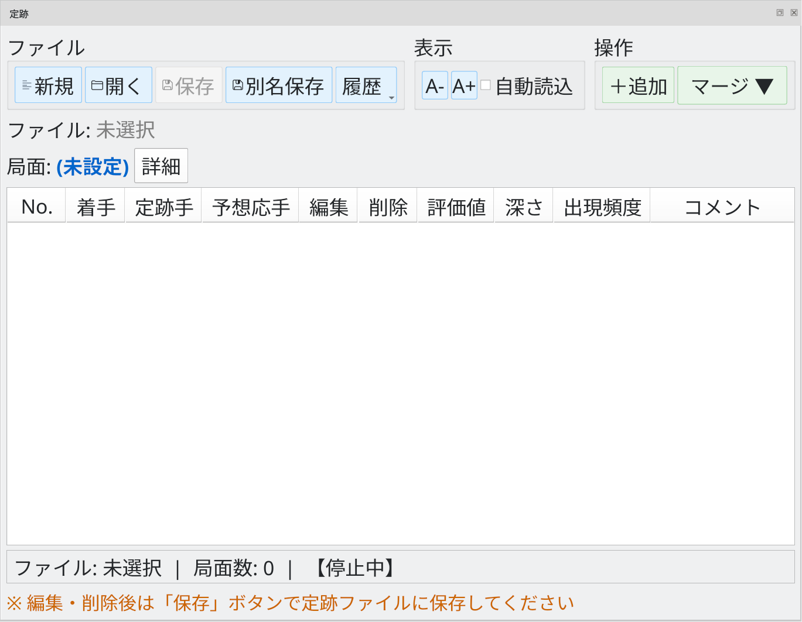
Opening book dock: initial state with no file selected
Click Open and select a .db opening book file. You can load YaneuraOu books such as standard_book.db.
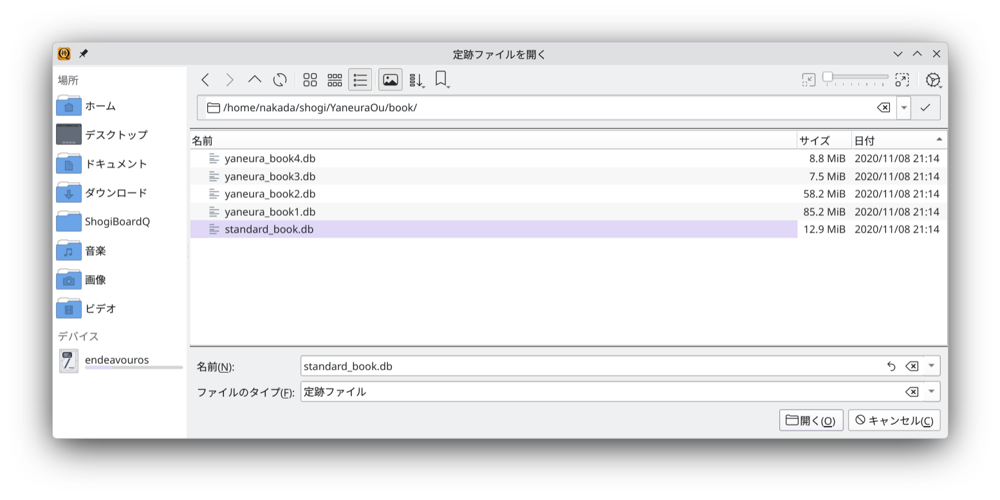
File selection dialog: choose an opening book (.db)
Once loading finishes, the file name and number of positions appear, and the status bar shows Loaded.
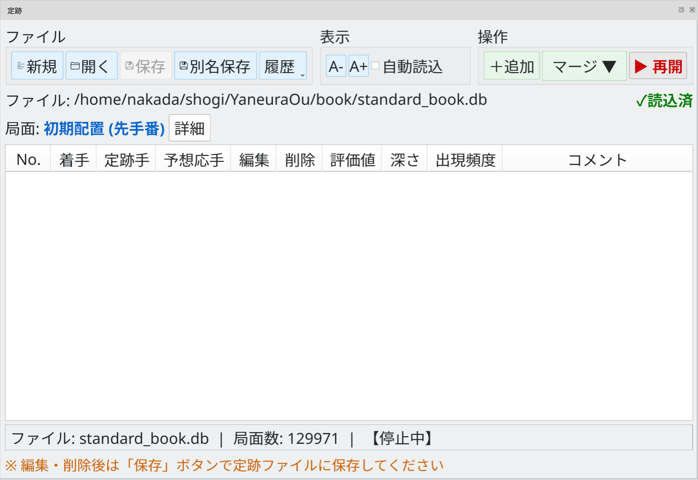
Loading complete: file name and position count (129,971 positions)
The table lists book moves for the current position, together with information such as evaluation score, search depth, and frequency.
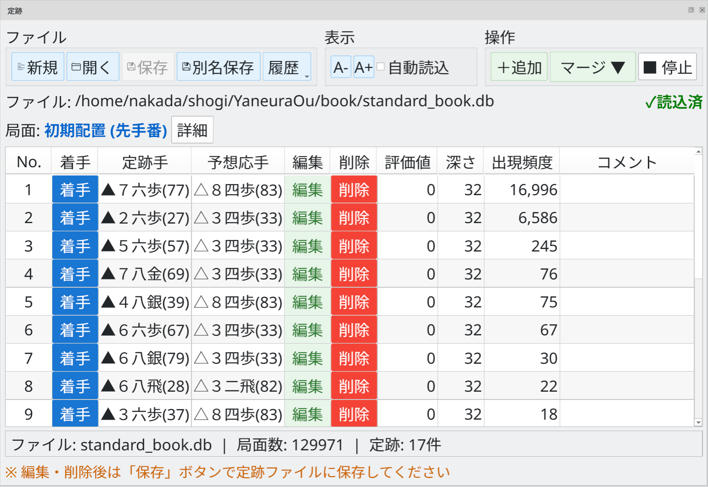
Book moves for the starting position, with evaluation, depth, and frequency
As the game advances, the table updates automatically to show book moves for the new position.
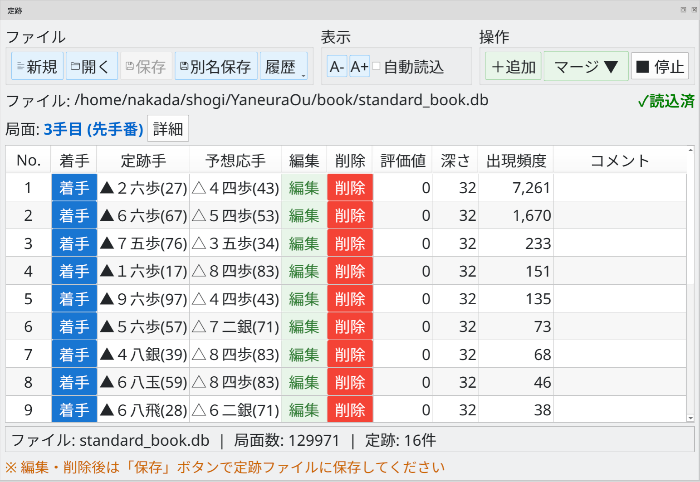
Book moves at move 3 (Black to move): automatically updated as play advances
Use the Play button to make a book move on the board
Click Play in the book move table to make that move on the board. You can consult the book while choosing moves during a game.
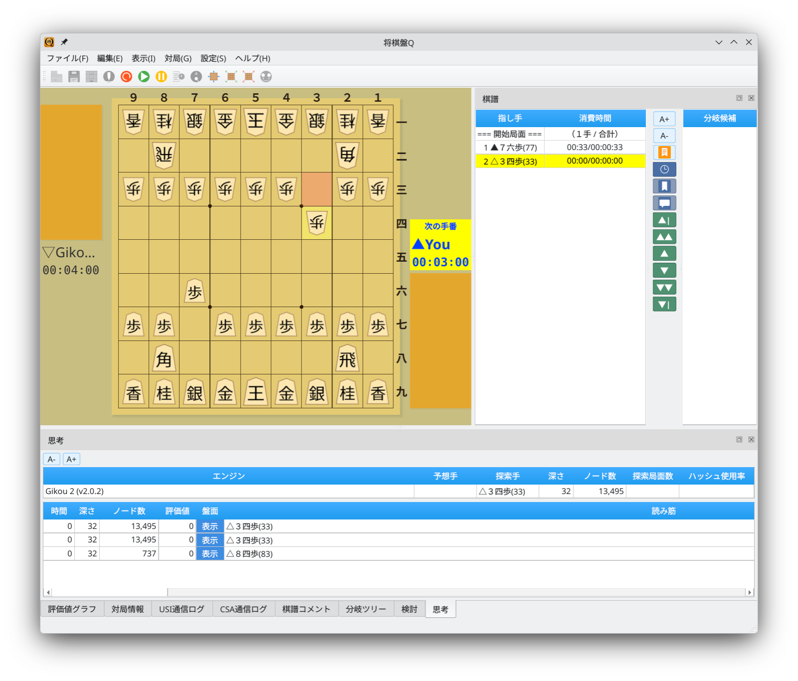
Playing a book move: the board updates and the game advances
Edit scores and comments, or add and delete book moves
Click Edit in the book move table to open the editing dialog. Change the evaluation score, search depth, frequency, or comment, then click Update to apply the changes.
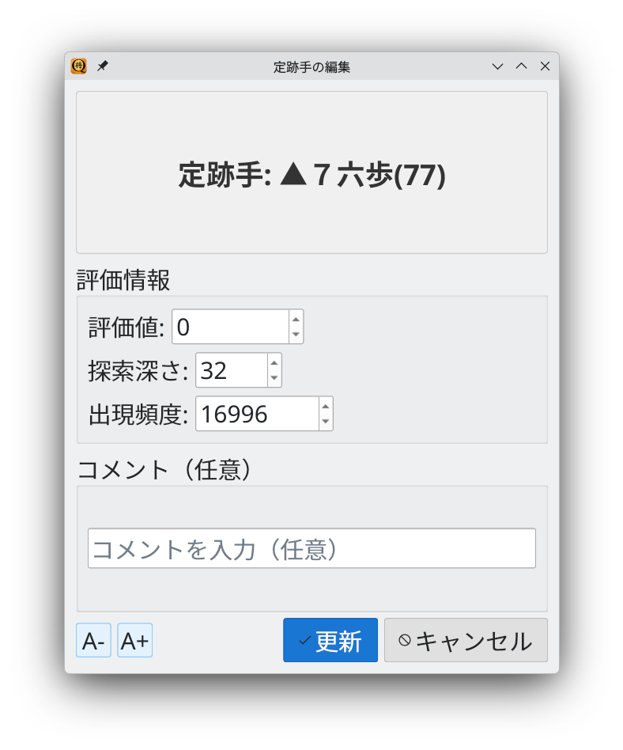
Edit a book move: change its score, depth, frequency, and comment
Click + Add to open the add dialog. Specify a move (moving a board piece or dropping a piece from hand), an expected reply, evaluation information (score, depth, and frequency), and a comment.
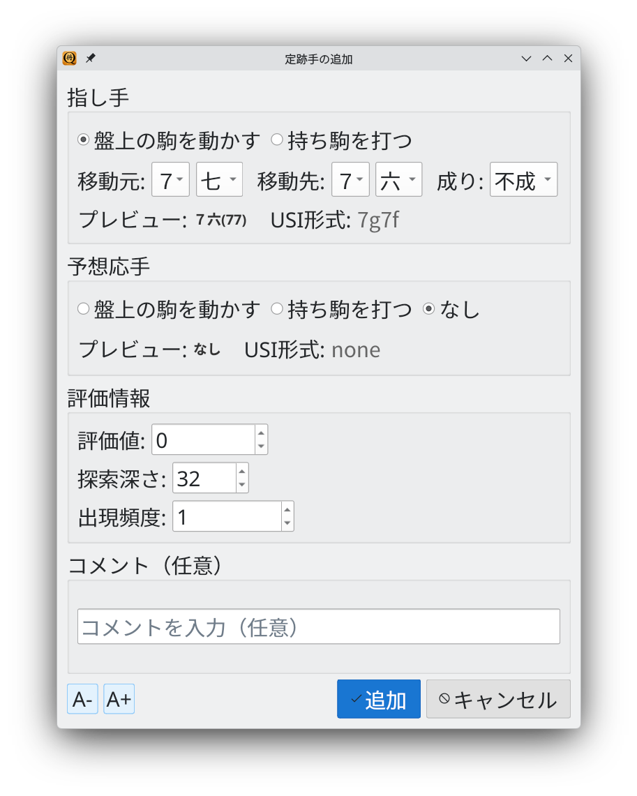
Add a book move: specify the move, expected reply, evaluation information, and comment
Click Delete in the book move table to open a confirmation dialog. Click Yes to delete the move.
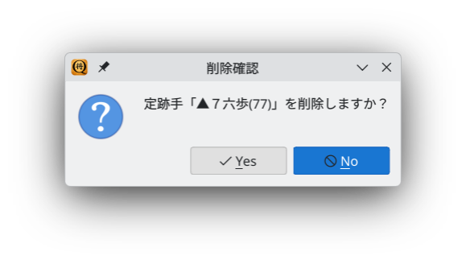
Delete confirmation: check the selected move before deleting it
After editing, adding, or deleting moves, click Save or Save As to write your changes to a book file. If you close the dock with unsaved changes, a confirmation dialog lets you decide what to do with them.
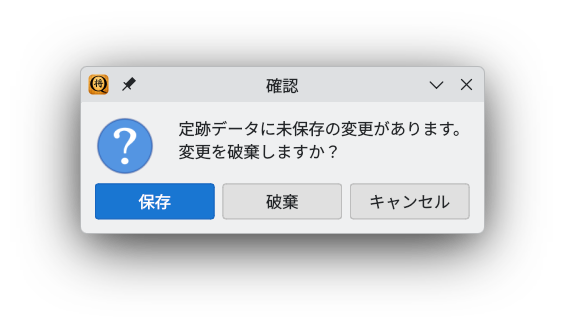
Unsaved changes: choose Save, Discard, or Cancel